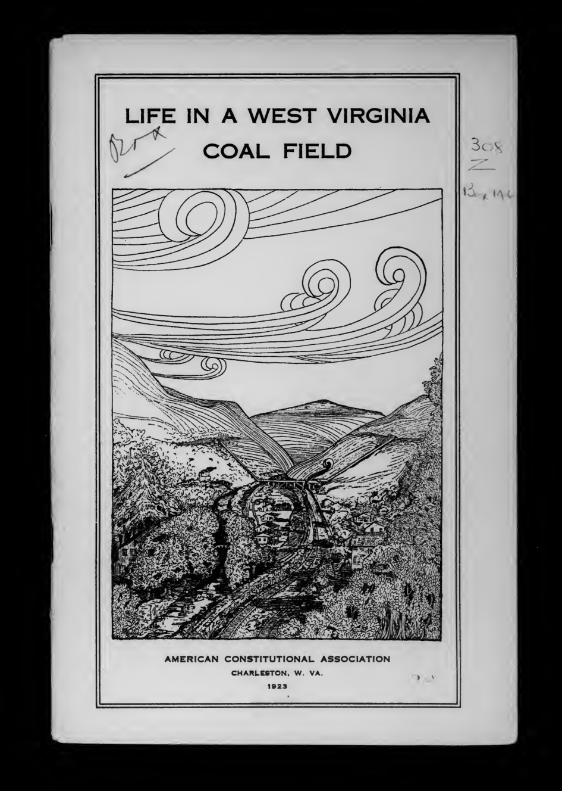
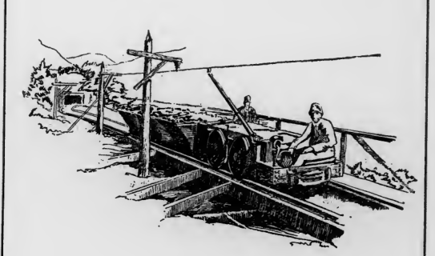
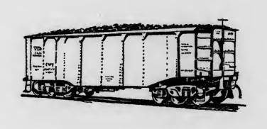
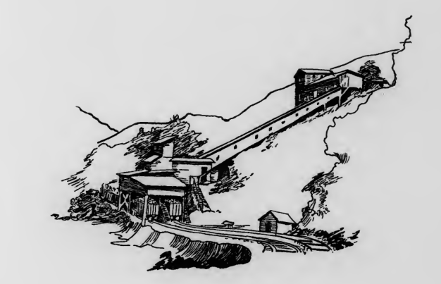
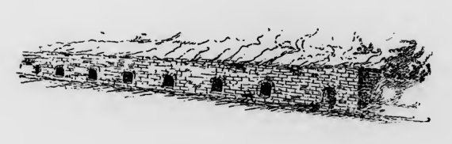

西弗吉尼亚煤田的生活（Life in a West Virginia Coal Field）
史料说明
本件是美国宪法协会（American Constitutional Association）1923年在西弗吉尼亚州查尔斯顿（Charleston）印行的小册子《西弗吉尼亚煤田的生活》，正文58页，有插图。据小册子自述，协会是“西弗吉尼亚的一个爱国组织”（a West Virginia patriotic organization），宗旨是“重申对《独立宣言》和美国宪法的信念”；书中调查数据由玛格丽特·H. 博特姆小姐（Miss Margaret H. Bottum）在卡诺瓦河谷和煤河河谷（Kanawha and Coal River Valleys）用六个月时间收集整理，由协会执行干事菲尔·M. 康利（Phil M. Conley）署名发表，卷首有西弗吉尼亚州州长E. F. 摩根（E. F. Morgan）的序言，州长本人也列名协会董事。封底列出协会的活动：“美国第一日”（America First Day）、刊物《美国公民》（American Citizen）、“揭露激进分子”（Radicals Exposed）等。
小册子写于1921年明戈县戒严和布莱尔山（Blair Mountain）冲突之后，针对东部报刊对西弗吉尼亚煤田的批评，用调查数字和走访见闻论证公司镇的生活“正常”，把不满归于“激进分子”（radicals）、“煽动者”（agitators）和“流动工”（floaters）。它代表运营商和州政府一方的声音，是公司镇辩护和“美国主义”（Americanism）宣传的文本。小册子正文里并没有出现Americanism或American ideals这两个词，其“美国式”的说法主要体现为“正常的美国公民”“美国社区”等措辞。本译文照原文口气译出，不作缓和，也不加评论。
底本是文献包`C_补充文献/C1_补充史料/American_Constitutional_Association_1923_Life_in_a_WV_Coal_Field.pdf`，共35页，是哥伦比亚大学图书馆缩微胶卷的扫描本（互联网档案馆题名“Life in a West Virginia coal field [microform]”）。PDF第1、2页是图书馆缩微胶卷的书目标板，第35页是“END OF TITLE”标板，均不属于小册子，未译。PDF第3页为封面，第4页起每个PDF页是一个对开页（左右两页印刷页），第34页为封底。【原页 N】用小册子印刷页码；扉页、目录首页、序言、导言首页、正文首页等页码未印出的，据前后页码推定，在《翻译说明》中列出；封面、封底标PDF页码。印刷页常在句子中间换页，本译文把【原页 N】放在跨页的那一句之后。文字层识别质量一般，凡数字和难认之处都渲染页面图像核对过；原书本身的拼写错误照译并在必要处加注。
译文
西弗吉尼亚煤田的生活

美国宪法协会
西弗吉尼亚州查尔斯顿
1923
西弗吉尼亚煤田的生活

美国宪法协会著
西弗吉尼亚州查尔斯顿
1923
目录
I. 矿镇
没有一般意义上的“平均矿镇”；未建制的工业社区；从矿营发展为城镇；本报告所涉六县的城镇；人口构成。
II. 矿镇的社交生活
户外娱乐；汽车；钓鱼；打猎；游戏；儿童游乐场与活动；社区圣诞树；电影；兄弟会；社区会堂；社交俱乐部；音乐娱乐。
III. 卫生与环境卫生
卫生的城镇是一桩生意；社区健康保险，或曰公司医生；社区护士；牙医；学童牙科诊所；收取名义费用的医院服务包括显著的福利。
城镇清扫；垃圾处理；家禽家畜圈养；自深钻套管井供水；厕所；在溪道砌护堤排水；房屋维修工。
IV. 矿镇的住房
双户房迅速减少；矿上雇员可以拥有自己的住房；房租；房屋类型多样；个人的生活水准决定他住较好还是较差的房屋；拓荒时期老矿点的例外；最好的工人住好房子；流动工和不满分子住差房子。
房屋内部装修；供水系统；可以住上有自来水的房子；一般矿工都有美观的家；只有生活水准低的人家才把家弄得脏乱。
电力充足，供各种家用；电价；电表带来节约与满意；以低于成本的价格向雇员供煤；送煤到户；水井经水泵和消防栓式水龙头供应家用水；房屋的管道设备。
V. 矿镇学校
矿镇学校的问题独特；需要专门研究；煤田学校被错误地归为乡村学校。
现代学校取代旧式不卫生的校舍；矿镇学校优于乡村学校；全州学校标准化在矿区进展最快；最低学期八个月；阻碍学校更快发展的因素；好学校是社区的财富。
西弗吉尼亚教师资格证书的要求高于南方其他十二州中的任何一州；城市以外最好的教师在煤田；应付工业社区的问题需要专门培训。
学童；课程需要专门适应他的需要；游乐场优于乡村学校的游乐场；标准游乐设备日益增多。
矿镇管理人员极为关心学校；为校舍和薪金拨出巨款；关于公司资助学校的各种看法；教师宿舍；对初级中学的需求；对学校而言，“最好的也不嫌太好”。
VI. 宗教生活
宗教生活正常；礼拜活动多到无法完整报告；教堂建筑不足；借用校舍和社区会堂；主日学工作令人欣慰；在本地领导下发展良好；出席率极佳；驻地牧师稀少，人们的热心更加令人鼓舞；巡回牧师和本地传道人。
VII. 公司商店
竞争性商店众多；煤田物价偏高和偏低的原因；平均与城市物价相同；经销最好等级的食品；没有人要低等级货；冷藏与冰。
商店经理为社区提供出色服务；一人要接受和应付六家商店的抱怨；煤矿工人是正常的顾客；被荒谬地称为挥霍阶层；作为个人，有节俭的也有挥霍的，与任何地方一样。
VIII. 执法
通常的县级官员；难以找到县当局。
州警察队（State Constabulary）为每个男人、女人和孩子提供充分保护；维护法律、秩序和对依法成立的当局的尊重。
IX. 交通
每个城镇都通铁路；通常每天往返客车各两班；城际电车和专门的工人列车从城里开出接送雇员；公司维持铁路支线。
处处有出租车服务；对矿上雇员有特别价格。
百分之十二的家庭拥有汽车，查尔斯顿为18%；车库在矿镇成为严重问题。
改良道路的修建进展迅速；五十八个城镇中有三十九个位于已铺装、铺砾石或在建的道路上；公司拨出巨款修筑通往干线公路的道路；认为好的道路能扩大雇员在社交、宗教及其他方面的机会；好的道路意味着更好的合校学校和高中发展的机会。
X. 杂项
矿镇家庭平均固定开支一览；低于独立城镇；乡村生活和城镇，花同样的钱得到的好处较少。
两大日报送达每个城镇；每个城镇都有电话电报服务；最偏远的城镇每天也有一班或多班邮件。
菜园是矿镇的独特景象；矿工种出价值数千美元的农产品；外人很少承认矿工节俭；意大利人在山坡上筑台地、砌石墙种菜。
数以百计的矿上管理人员是从日工干起的；处处洋溢着情谊。
XI. 结论
小矿镇是比普通独立城镇更好的居住地；生活是正常的社会生活；矿工为什么不愿在矿镇里拥有自己的住房；煤炭工业给西弗吉尼亚山区带来的巨变。
本地山民和外籍雇员有无限的机会成为煤炭公司的管理人员。
序言
谨请公众垂注下面这份美国宪法协会的报告，它描述了西弗吉尼亚煤田中存在的正常生活。
本报告依据的资料，来自协会执行干事菲尔·M. 康利先生（Mr. Phil M. Conley）及其助手的仔细研究，他们在本州最古老的矿区之一考察了各项有关主题。
像康利先生这样地位崇高、品格高尚的绅士对西弗吉尼亚煤田生活所作的不偏不倚的研究，值得一切想要了解这一问题真相的人信任；它也驳斥了激进的、不负责任的组织派到煤田来的宣传分子（propagandists）所散布的许多不实之词。
谨上，
E. F. 摩根（E. F. MORGAN）
西弗吉尼亚州州长
导言
过去几个月里，东部报刊上出现了许多诽谤西弗吉尼亚州的文章。这些文章的作者把这个州和它的全体公民描绘成一幅黑暗、阴沉的图景。大多数耸人听闻的故事，都是从煤炭工业以及据说在本州矿镇中普遍存在的状况里找到依据的。他们对本州发表过这样的说法：“联邦中最无法无天的州”，以及“文明海洋中的一座野蛮孤岛”。
这些攻击针对的是本州及其人民的荣誉，损害了西弗吉尼亚的福利、繁荣、进步、商业和社会利益。如果这些诽谤性文章针对的是某些个人或利益集团，这些人本可以提起诽谤诉讼来寻求救济，但这些攻击针对的是西弗吉尼亚一百五十万公民。
美国宪法协会是西弗吉尼亚的一个爱国组织，它认为查明以下两点是在为本州效力：煤田的生活对住在那里的美国公民是否带有压迫性；那里的状况是否像外州阴险的宣传分子和抱有偏见的批评者所描绘的那样。
本着这一想法，协会在卡诺瓦河谷和煤河河谷（Kanawha and Coal River Valleys）作了一项研究，相信这一地区是西弗吉尼亚煤田的典型。这里有好镇子也有差镇子，有老镇子也有新镇子，有工会矿镇、非工会矿镇和开放工厂（open shop）矿镇，有进步的镇子，也有落后的镇子。
玛格丽特·H. 博特姆小姐（Miss Margaret H. Bottum）在西弗吉尼亚煤田做了三年半的社区工作，她在卡诺瓦河谷和煤河河谷用了六个月时间，收集数据，汇编本报告所载的资料。
她访问了矿工、矿工的妻子儿女、铁路雇员、公司管理人员、矿主和政府官员。在走访的每个城镇，都使用统一的提纲收集数据，以免出现出入。
本报告所载的是事实陈述，而不是意见表达。
菲尔·M. 康利（PHIL M. CONLEY）
执行干事
美国宪法协会
西弗吉尼亚州查尔斯顿
卡诺瓦河谷与煤河河谷研究
1923
I 矿镇
在这项研究中，我们的目的不是辩护，也不是谴责；我们想要描绘的，是典型矿镇里人们的生活。我们希望近距离地、写实地呈现西弗吉尼亚约十万人赖以生活的实际状况。
煤田！可怕！一幅黑暗、不祥、阴沉的图景立刻浮现出来。许多报社记者、福利工作者、改革者和来自外州的煽动者（agitators）来到西弗吉尼亚，在矿镇里待上几天，访问工人和他们的家人。他们收集材料，写出耸人听闻的故事和长篇报告，其中满是泛泛之论，什么也没说清楚，却暗示了许多并不存在的状况的图景。
对真正研究过情况的人来说，对煤田生活的泛泛概括，其说服力大约就像拿纽约人的生活同戈弗草原（Gopher Prairie）居民的生活作一笼统比较一样。【译者注：戈弗草原是辛克莱·刘易斯（Sinclair Lewis）1920年小说《大街》（Main Street）中虚构的明尼苏达州小镇，常用来指偏僻闭塞的美国小镇。】煤田里有好有坏，有富有穷，有干净有肮脏，有博学有文盲，有文雅有粗野，同人们在波士顿、纽约或费城所能见到的一模一样。
没有什么平均城镇，正如没有平均城市、平均州或平均国家一样。所有矿镇都相似，但没有哪两个在任何方面完全一样。诚然，把同一地区的若干城镇放在一起考虑，可以得出一个近似的平均数。但这样求得的平均数，不可能适用于国内任何其他地区。
矿镇不同于其他任何社区。它们是纯粹的工业社区。住在矿镇的男人几乎都为煤炭公司工作。城镇存在的唯一理由就是生产煤炭。
本报告涉及的58个城镇都必然是未建制的（unincorporated）。因此，煤炭公司的管理人员在很大程度上必须负责执法，保护住在他们社区里的公民。
此外，公司还必须负责确保提供适当的学校设施、教堂、主日学、娱乐厅和其他社区活动。工人的住房、商店、街道、人行道及其他城镇必需的设施，都必须由煤炭公司修建。
一个矿镇开办时，在工程师完成工作之后，管理人员和工人在住房建好之前只能住在简陋的棚屋里。建设工作艰苦，常常令人气馁，种种不便必须忍受。会设一个供应站（commissary），每个人都从那里领取给养。起初一切都是临时的，也只能如此。因此这个地方被称为“矿营”（mining camp）。但是住房、商店、学校、教堂和街道建成以后，正常的社区生活就建立起来了。这个地方于是成为名副其实的城镇。
地形条件在很大程度上决定了每个矿镇的生活条件。有的矿镇位于河边，河谷宽阔，附近起伏的山丘适合建房和种菜。有的位于河谷平地，河谷宽得足以建起大的城镇。还有的位于狭窄的山谷中，夹在陡峭的山峰之间，只有一条长长的道路或街道。
煤在哪里，城镇就必须建在哪里。所考察的矿镇坐落在风景如画的山区。
这里必然是崎岖的。但人们会惊叹于平地是如何被充分利用来建镇的。山坡上的菜园经过精耕细作，出产大量蔬菜。
所考察的城镇是完全正常的小镇。它们比普通的独立小镇更舒适，便利设施也更多。走访的大多数城镇，卫生状况比大多数城市还好。这些城镇的公民是普通人，同任何美国工业社区里的人一样。
这是本州最古老的煤田。这里的矿井早在1843年就开采了。另一方面，有些矿井是最近四年才开的。由于这些情况，我们认为这一地区是本州全部矿区的典型。较老的城镇有一些不尽如人意的地方。较新的社区则吸取了修建第一批城镇的工程师所犯错误的教训。
没有人会指望一家公司仅仅因为设计和建造上有过错误就拆掉它的房子。如今的城市因为街道狭窄而交通堵塞，那些街道是在人们还没想到汽车的时候修的。然而公民们知道，拆掉永久性建筑来拓宽街道是行不通的。
本报告所代表的58个城镇分布在西弗吉尼亚的六个县，如下：卡诺瓦县21个；费耶特县（Fayette）12个；布恩县（Boone）10个；罗利县（Raleigh）6个；洛根县（Logan）6个；帕特南县（Putnam）3个；共计58个。
本报告所涉地区的人口为36,445人，即住在西弗吉尼亚煤田这一地区的煤矿雇员及其家属。
在这一总人口中，19%是黑人（negroes），12%是外国出生或父母为外国人者，69%是本土白人美国人（native white Americans）。
本报告涵盖截至1923年6月1日该地区每日吨位配额的57%，即每日59,244吨。
II 矿镇的社交生活
矿镇的社交和娱乐生活，与同等人口的小型独立城镇相当，而且更多时候比它们优越。
矿区居民有许多享受乐趣和户外娱乐的机会，他们觉得很有好处。游泳、钓鱼和猎小动物，在当令季节很受欢迎。
下工以后，绿荫掩映的山路上常有汽车驶过，车里坐满了亲戚朋友，有的出来兜风，有的去探亲访友，有的去参加社交活动或看电影。
“人人都打弹子，扔马蹄铁”，这是矿镇里常听到的话。槌球在一些社区很流行。打牌的风气传到矿镇，同别处一样流行。不过天气好的时候，这是一种户外游戏，男人们在树荫下的石头或其他临时搭的桌子上玩。
煤田里最受欢迎的运动是棒球。五十六个城镇报告有球队；在人口混居的地方，有色人（colored）和白人都有本地比赛，大多数球队打城镇间的比赛。公司对这项活动慷慨捐助，出钱置办队服、器材和球场，人们对星期天下午的球赛兴趣浓厚。全区散布着一些一流的棒球场，有围栏、看台，内场维护得很好。
十八个城镇共有二十四个网球场，虽然主要由管理人员使用，但向所有想打球的人开放。有半打城镇有正式球队。某个社区及周边乡村的网球冠军，是一个来自明戈的健壮装煤工。
儿童游乐场与活动
游乐场越来越多。它们形式各异：有的是城镇夹在高耸的山峰之间，就在溪边窄窄的一条空地上排开一列标准器械；有的是一块三英亩大、有树荫的草地。看到了二十一个为儿童配备了设施的游乐场，几处绿荫公园设有长凳，树上挂着秋千。除了学校教师之外，几乎没有人开展有指导的游乐场活动。在大多数情况下，单单一个矿镇规模太小，不值得花钱聘请游乐场指导员。
儿童有指导的活动大多同学校或主日学有关。平均每个矿镇每年举办三次大型联欢会。此外还有野餐、游泳聚会，以及运动会日那样的户外比赛。也成功组建了几支男童子军、女童子军或营火女孩（Campfire Girls）队伍，但在矿镇，开展这类工作所需的领导人才是个问题。
社区圣诞树
除了学校和主日学在感恩节、复活节、儿童节和学校毕业典礼上的联欢之外，每个矿镇都报告有一棵由教会、学校和主日学主持的社区圣诞树。公司在联欢活动的捐助名单上名列前茅，大多数公司还另外给每个孩子发水果、糖果，也许还有一件玩具。有几家公司给每个雇员送一只火腿或火鸡，但这个习惯现在不像往年那样普遍了。
电影
五十一个城镇要么自己有电影，要么离另一个矿镇或独立城镇不远，人们每周可以去那里看两三次电影。
（有三十二个城镇距离某个独立城镇一英里到五英里。）片子一般都不错。观众很多，由电钢琴或自动钢琴配乐。一位在本社区长大的经理断言，由于电影在煤田的影响，人们现在穿得更体面，举止更好，整体上有了改善。
兄弟会
每个矿镇对兄弟会（lodges）的报告都很好，诸如皮西厄斯骑士会（Knights of Pythias）、红人会（Red Men）、奇人会（Odd Fellows）、驼鹿会（Moose）和有色人共济会（colored Masons）。有五十二个城镇有两个或两个以上这类组织，其他城镇则报告有相当比例的会员去附近城镇参加分会活动。妇女辅助会也不少见。在大量雇用意大利人的地方，他们有自己的“意大利联合之子会”（United Sons of Italy），相当于美国的兄弟会。
社区会堂
几乎每个城镇都有分别供有色人雇员和白人雇员使用的台球室。这些台球室里设有汽水和冰淇淋摊，可以买到香烟、烟草、口香糖和糖果。
除了众多的台球室、电影院和兄弟会会堂之外，还有四座一流的基督教青年会（Y. M. C. A.）会所和八座社区会堂。在一些城镇，电影厅被用来召开社区会议和举办学校联欢。一座出色的社区会堂一年前烧毁了，现在正在重建；另一家公司计划今年建一座大型社区会堂，除其他设施外，还将包括一个供雇员洗澡的浴室和一所急救医院。
杂项
至于基督教青年会会所，最大的两座服务的人数在2000到5000之间。后一座是一家小煤炭公司大规模修建的，用意是使它成为周围乡村的中心，那一带有十家以上煤炭公司的矿场和几个独立城镇。
这是该煤田社区工作的一种新做法。
许多社区的人们为自己组织了一些俱乐部或其他社交团体来娱乐：社区俱乐部、戏剧俱乐部，还有一个设有阅览室和休息室的社交与市政俱乐部。有一处的俱乐部活动室里，几组妇女教人缝纫和烹饪，并在那里举行妇女俱乐部的聚会。
一个镇上有一支胖子球队和一支瘦子球队，两队之间举行比赛。另一个镇上的有色人男子似乎非常喜欢扭打，矿长就送给他们拳击手套，拳击于是成了社区里流行的运动。
发现有许多由雇员组织的乐队和管弦乐队，其中有一支意大利管弦乐队和一支匈牙利铜管乐队。每个矿镇都有数不清的维克多牌留声机（victrolas）、钢琴、自动钢琴、手风琴（原文拼作accordians）和其他乐器。一位管理人员断然说，他的雇员中有90%拥有一件或一件以上乐器。
III 卫生与环境卫生
矿镇的环境卫生问题是一桩生意。有健康的环境是划算的。哪里有因不卫生而引起的伤寒和其他传染病的危险，男人们就不会让家人住在哪里。笔者知道一个矿镇几年前爆发过伤寒。由于这个镇落下的名声，公司很长时间都招不到最好的那一等工人。
在所考察煤田的一个区域，有四个矿镇，总人口约五千人。它们由一名医生服务，另有一名能干的全职受训护士协助。
过去十年里，这几个镇共报告了六例伤寒。
这表明这些城镇的卫生状况在平均水平以上。一名医生和一名护士就能充分照顾这么多人，证明在保护有关城镇公民的健康方面下了很大功夫。
如果一名医生能令人满意地满足一个五千人社区的需要，那么按这个比例，像查尔斯顿这样一个四万人的城市有八名医生就够了。但这个城市有一百一十名医生，护士的人数也大致相当。
公司医生
“公司医生”（the company doctor）存在的原因，美国劳工部儿童局（Children’s Bureau）1923年发布的讨论矿镇生活的第117号公报解释得很好，现引一段如下：“住在公司镇以外，最严重的不利之处大概是生病时请医生的问题。上面提到的那个独立居民点离最近的私人医生有15英里，而且没有电话。”这准确描述了许多小型独立城镇和乡村社区的情况，它们太小，养不起一名医生。
矿镇一建立，就有必要为住在那里的人们提供医疗。经过多年的实践，从工资单上按月收取认捐款来提供医疗援助，作为一种健康保险，已证明最能让雇员（原文拼作emlpoyees）、雇主和医生满意。
每月认捐款从家庭的最高额2.00美元，到单身男子的最高额1.50美元不等。某些社区的费率略有不同，但上面给出的是整个这片煤田普遍使用的费率。
这样一种制度难免在医生和病人之间偶尔引起误会，因为按照认捐协议，病人可以随时，无论白天黑夜，随意多少次召请医生。
矿上雇员也是人，偶尔会给医生添上不必要的麻烦。但一般矿工的要求大概并不比任何其他人更不讲理。在这一制度下工作的医生也是人，偶尔也会失职。但在矿镇医生与雇员的关系中，这些误会是例外，而不是常规。
一般的公司医生，哪怕纯粹出于生意上的原因，也急于让病人满意，以保住自己的职位。在所考察的地区，公司医生的选定几乎无一例外都经过雇员同意。偶尔也有公司未经雇员认可就聘用医生的，但那不是常规。在这个地区，更常见的情况是雇员通过他们的地方工会选定医生，公司在这件事上没有发言权。
矿镇里的大多数人认识到，认捐款是为一项重大而宝贵的社区服务付出的一笔名义费用，也是时时刻刻防备他们或他们子女可能遭遇的任何紧急情况的一道保障。
正如一位医生所说：“在煤田行医的医生有好有差。有尽职尽责的，也有不那么讲良心的。合众国国会的参议员中如此，传播福音的人中如此，任何其他专业群体中也如此，说到底，煤矿工人自己当中也是如此。”
接生通常另收10美元，产前出诊和产后每日出诊当然不另收费。医疗服务唯一的其他额外费用，是治疗传染性性病的费用。
在所走访的城镇里，有53名医生按认捐制度在矿镇行医。社区小的地方，一名医生服务两个镇。有34名医生住在镇上；有15个镇离医生在两英里以内，9个镇离医生三到七英里。
社区护士
目前这一地区受雇的社区护士不到半打。原因是，护士照例由公司出钱供养，而公司在过去几年长期的罢工和商业萧条中至今尚未恢复元气。在一些城镇，护士因财务上的需要被解雇了，但一有可能就会重新聘用。在所走访的几个城镇，公司正在考虑聘请一名公共卫生护士，在县里聘用的全职公共卫生官员监督下工作。
牙医
这片煤田的煤炭公司没有在矿镇聘用牙医的习惯。不过，牙医想要在一个有足够业务的矿镇开业时，公司会给他们提供诊室。这一地区的大多数人到较大的城镇去看牙。
有五个城镇有本地牙医；29个城镇离最近的牙医四英里或不到四英里，22个城镇离牙医六到十二英里；只有两个城镇报告本地区没有牙医，但它们由十八英里外查尔斯顿的牙医服务。
除上述服务外，还有巡回牙医，从一个镇到另一个镇，在社区里待上一两周，或者需要多久就待多久。
牙科诊所
美国红十字会（The American Red Cross）与各县学校董事会合作，派出一队牙科保健员到卡诺瓦县的学校做牙科检查。她们在所考察的矿镇作过多次示范，由于她们去年的工作，其中一个镇将设立一个永久性的牙科诊所。诊室由公司免费提供，设备和维持费用由学区学校董事会负担。
正在同卡宾溪（Cabin Creek）学区学校董事会商定计划，为其学校的牙科保健服务提供长期支持。
医院服务
这个地区的矿镇里没有医院，各镇由六家医院服务：两家在煤田的独立城镇，三家在查尔斯顿市，一家在亨廷顿（Huntington）。
为矿镇服务的医院，距离从两英里到八十四英里不等，有31个城镇离为其服务的医院不到四十英里。医院是雇员在群众大会上讨论选定的；如果公司提出建议，最后决定权也在雇员。
公司直接同医院订立合同、支付费用。这样做有几个必要的原因。矿镇是长久的，雇员却不是；不管雇员来来去去，都必须为社区的利益维持医院服务。但公司经办此事最明显的原因是：只有在少数情况下，矿工自己当中才有能干的领导人来办理这类安排；而且费用必须通过公司办公室收取。
工人受伤严重、需要立即住院治疗时，只要能搬动，往往由公司出钱用专车火速送往医院。
这片煤田向雇员收取的医院服务费，通常是每月一美元。有些城镇的雇员花五十美分就能享受这项服务。这笔钱通过公司办公室收取，文书工作的费用由公司承担。
医院收取这些名义费用，就为在册的任何雇员或其家中任何受扶养成员在生病或受伤时提供护理和治疗。治疗包括雇员或其受扶养人的任何伤病，但接生、传染性性病，以及任何会危及院内其他病人的传染病除外。
治疗还包括各种化验、X光和外科手术、外科专科、眼耳喉科和泌尿科服务。
把接生排除在外，主要有两个原因。一是医院无法收治所有这类病例；二是公司医生接生另有报酬，医院不想同医生竞争。性病治疗也是如此。不过，经煤田医生特别推荐，医院每年会收治一定数量的产科病例。有一家医院不得不为这类特殊病例专门留出一整个病房。
煤田的医院依靠矿工缴纳的费用维持生存，遇到罢工和商业萧条，优秀的医院也曾倒闭。即使付款中断，它们仍然收治病人，只有在少数情况下才追收欠费。这些医院只取得名义上的利润；这份利润是正当的，也是让它们开门、继续提供宝贵服务所必需的。
有一家医院花一万八千美元购买镭。缴一美元的矿工病人也能享受这种治疗。私人病人按医院的正常收费付款。每治疗一个私人病人，就要治疗三个矿工病人。
城镇清扫
绝大多数城镇在街道和院落的外观上状况良好。有几个镇是眼中钉，对此公司和居民似乎负有同等责任。
关于城镇清扫的报告如下：不清扫的，3个；每年清扫一次的，9个；每年两三次的，17个；每季度一次的，6个；每月一次的，6个；每周一次的，16个；每周两次的，1个。所有这些清扫都由煤炭公司出钱。
后四组的29个城镇，在街道和院落的清洁方面已经无可挑剔。这一组中有15个城镇报告，每年用于街道院落清扫和垃圾处理的开支共计30,495.64美元。
垃圾处理
关于垃圾处理的报告如下：没有免费收垃圾的，23个；每月一次，1个；每两周一次，4个；每周一次，19个；每周两次，11个。有六家公司免费给每户提供一个卫生垃圾桶；三家提供刷了石灰水的木桶；其余的公司让各人自备垃圾容器。所有垃圾的收集和处理都由公司出钱。
家禽家畜圈养
报告把牲畜圈养在离住房有安全距离之处的城镇有33个；允许牲畜随意走动的有25个。而且，正如一位经理所说：“鸡是自由公民”，在46个矿镇里情形确实如此。不过也有几个镇要求在菜园季节把鸡圈起来。
供水
一般的矿上雇员使用公司提供的深钻套管井的水，但有少数不那么聪明、粗心大意的人不利用这项设施。他们喝敞口泉水、河水和溪水。这大概是这一地区伤寒传播的最大单一因素。
检测水质污染似乎没有统一的规定。饮用水检测的报告如下：每年两次的3个；每年一次的25个；三年一次的9个；六年两次的4个；需要时检测的1个；还有16个报告钻井以后没有再检测过水，不过所有的井在当时都检测过。
州卫生局（The State Board of Health）有条件作这些检测，而且随时免费检测送去的样本。定期检查饮用水的做法最值得称道。
厕所
发现绝大多数城镇（52个）的厕所不卫生。有两个城镇各安装了15个卫生厕所，另一个安装了16个，还有一个安装了30个。另外一家公司报告了一项大规模计划，要立即铺设下水道，覆盖全镇。
所谓“不卫生的厕所”，是指厕所不是按照保护公共卫生的要求建造的，或者没有满足足够多的这些要求而达到安全；这些要求是：相对于水源选址安全，通风，底部敞开处装纱网，座位有盖，各方面都能防蝇。这并不是说其中许多厕所没有通过使用消毒剂、经常清扫或填埋后迁移而保持良好状态。
只有一个城镇报告全社区有下水道。但另一个城镇有一套卫生而有效的室内化学厕所系统，公司为每个厕所每年花费18美元维持。有两个城镇有化粪池；另外两个有卫生的封闭粪坑。
许多城镇对将来安装切实可行的卫生厕所系统的计划表示了很大的兴趣。
杂项
与社区卫生直接相关的一个重要项目，是疏浚溪床，把溪水约束在高高的木框护堤或混凝土墙之间。这样能排干周围的土地，也能开垦出建房用地，还能防止水积在房屋底下变成死水。
有八家以上的公司在这项工程上花费了数万美元。它大大改善了城镇的外观，同时也是有效的防洪措施。
公司随时养着工人，修理房屋、篱笆和人行道，并照管已安装的管道。此外，每年都把整个城镇检修一遍。大多数城镇大约每三年粉刷一次，其他的每五年一次，花费很大。
IV 矿镇的住房
在所调查的58个矿镇中，煤炭公司拥有7,928所房屋，其中双户房，即供两家居住的房屋，只有182所。其余都是四个房间、六个房间的单户房，还有少数八个房间的。
在这58个城镇中，有386名矿工拥有自己的住房。各镇人数从一个镇的五人到另一个镇的一百五十人不等。每天清晨和傍晚进出查尔斯顿的工人列车，使矿工可以在城里、在小型独立城镇里，或者沿卡诺瓦河谷绵延许多英里的乡间拥有自己的住房。这片乡间有很大一部分已经划成地块和小农场，供煤田雇员使用。改良的道路和汽车提供了更多拥有住房的机会。
房租
矿镇房屋的租金，从每间每月1.25美元到每间每月3美元（含不限量用电）不等。本报告所包括的58个城镇，平均租金为每间每月1.69美元，四间一套的房子即6.76美元。房间数增加到六间、八间时，每间的租金相应递减；六间一套的房子按类型不同，每月7.50美元到8.50美元。
在大多数情况下，煤炭公司收取的租金既抵不上原来的建造成本，也抵不上每年的维修费用。能抵消维修费或略有盈余的地方，是新建的城镇，房产的折旧和维修实际上还谈不上。我们收集了维修、篱笆和人行道的实际费用，同实际租金收入作比较。只有十一处的收入抵得上维修费用，只有三处有可观的盈余（维修费用中不包括折旧和保险）。
如今建一所房子的花费，几乎是十年前建一所类似房子的三倍，但租金同旧房子一样。例如，十年前造价500美元的房子，租金每间每月1.50美元。今天同样设计的房子造价1500美元，租金却一样。
房屋类型
房屋类型如此之多，可以保守地说，矿工可以住他所喜欢的那种房子。他的选择范围，从一间没上漆的素木板“单身汉棚屋”，到一座整洁的着色木瓦平房，或者装着护墙板、漆得很好看的平房；在某些地方，甚至有砖砌的平房可住。这完全取决于工人本人想要什么样的家，取决于他的生活水准、社交愿望，以及他个人对所提供的工作条件的看法。
水往低处流，煤矿工人一般也是这样各自住进煤田里较好或较差的城镇。如果他们的生活水准高，希望子女上好学校，他们就会住在有最好的住房和学校的地方。如果他们对居家环境和舒适生活的便利设施漠不关心，对学校也毫无兴趣，他们就会住在较差的城镇。
如果他们是不满分子（discontents）、流动工（floaters）和无知阶层的煽动者，他们就会住在较差的房子里，处于肮脏难看的环境中，而外界的努力和影响无法把老一辈人从这种环境中提拔出来。
无论是学校、教会、市民自豪感，还是环境，似乎都不能把这种人从麻木中唤醒。他们是在任何社区都能找到的那种漠不关心的阶层。似乎也有足够多漠不关心的公司来收容这个在煤田里漂来漂去的阶层。其中有些人是好工人。这些人常常住在较好城镇的边缘，因为他们不肯好好照料自己的家，因而不受那些生活水准较高、更有进取心的矿工群体欢迎。
这条规律，即较好较新式的住房由好工人居住，有少数例外。这些例外出现在较老的拓荒时期矿场，那里的人满足于样式不那么新的简朴房屋。他们在这些房子里住了十年、十五年到二十年甚至更久。他们在自己建立起来的群体社交生活中过得很快乐，有足够的菜园，有一所满足他们要求的学校，火车服务方面所处位置令人满意，工作条件也是他们乐于接受的。
这样的居民点常常由同一国籍的节俭外国人组成，一个小意大利或一个小匈牙利，他们把部分积蓄寄回祖国。这些人养着奶牛、鸡、猪、山羊、鹅和其他家畜；而且几乎无一例外都有一个照料得很好的菜园，有些人用旧大陆的方法，就地取天然石块砌墙，把陡峭的山坡修成台地，堪称节俭勤劳的无与伦比的典范。
另一些这样的群体是西弗吉尼亚本地人；其中许多人在附近山区拥有自己的家，矿井不开工时就在那里种地。在一个镇上，有一半工人（150人）住在自己的农场上，每天开着他们的“福特小破车”（flivvers）翻山越岭去上班。这些居民点里有祖父、曾祖父辈的人；有些农庄已经有一百多年了。
这些河谷里的煤矿工人，绝大多数是正常的美国公民，只要不受煽动者利用，就奉公守法、心满意足。他们的家整洁，他们要求有好学校，他们上教堂和主日学，不管他们住在工会矿镇、非工会矿镇还是开放工厂矿镇。单是这一点就证明，在大多数情况下，住房条件一定是令人满意的。
在这片煤田里，是少数人，是那些较为无知的人，有色人、白人和偶尔一个外国人，成了不满分子，在劳资关系上成了激进分子（radicals），成了煽动者和捣乱分子。正是这个阶层，以他们低下的生活水准和无知，使外人和体面的矿上雇员都把矿镇看作不适合居住的地方。
这个阶层满足于最差的住房和生活条件，这一点每天都得到证明：分给他们的较好的房子，受到种种糟蹋和损毁。按照矿工工会的规章，公司不可能摆脱这些人；工会领导层从不允许因激进主义（radicalism）或捣乱而解雇工人。公司所能做的最好的事，就是把他们隔离开来，“放在镇子下头，那儿他们的脏乱不碍别人的事”。但他们被毒化的头脑和低下的标准，污染了整个城镇，降低了社区的士气。
正是这些人，以他们恶劣的生活和态度，经过宣传员的利用和调查者的走访，在公众心目中造成了这样一种观念：所有煤矿工人作为一个阶层，都是不聪明、过日子邋遢、愚昧无知的人。对于无论是在社交场合还是作为雇主亲身接触过矿工的人来说，这对煤田工人是何等严重的不公，是不言而喻的。几乎没有哪个公司管理人员不真心希望从他的矿场上拆掉每一所难看的房子，只要那些甘愿住在里面的人跟着房子一起走。
房屋内部装修
至于矿工住房的内部装修，那也在很大程度上取决于他的品味、他对家的真正愿望以及他的生活水准。
大多数房屋都钉了木板顶棚和墙板，然后着色、上油、刷漆或糊墙纸。许多房屋装了墙板，用木条分格镶嵌。相当多的房屋抹了灰泥。在大多数城镇，内部装修各式各样；在少数城镇，所有房屋都抹了灰泥，但这些是例外的城镇。
至于糊墙纸和室内刷漆，许多公司会提供材料，只要工人肯自己动手。由于有些工人搬家频繁，这种办法被认为切实可行。“流动工”很少珍惜或爱护这类改善。但是，凡是矿工在一个镇上住了五年、十年、十五年、二十年的，这样的工人就会在油漆、墙纸和便利设施方面从公司那里得到许多照顾。在另一些城镇，政策是按实际成本向矿工收取这些费用，或者让他完全自己做主、自己出钱处理。
一些有供水系统的公司，只要工人肯付一笔名义上的附加租金，就给住房装上自来水、浴缸和盥洗设备。这样做是必要的，因为有些矿工不懂得珍惜这些便利设施。工人必须是长期留下的那种人，才值得公司承担这些额外开支。在一个镇上，有四名矿工在家里装了淋浴。在另一个镇上，有好几户人家有自己的浴缸。这证明，一个矿工在居家便利方面想要什么，在煤田里这个镇得不到，在另一个镇也能得到。
住房不得不建在狭窄河谷里、山坡上的水往下流的地方，许多较好的工人就在院子里挖沟、埋排水管。较差的工人则任由水积在房子底下，并且痛骂公司，其实他们只要稍加努力就能解决问题。在一个矿镇，公司有二十个房间的寄宿舍装有暖气、盥洗设备，有足够全体寄宿者使用的淋浴，还有电灯和其他舒适设施。不用说，住在那里的都是最好的那一等工人。
钉了木板顶棚或墙板的房屋，可以刷漆或糊墙纸，弄得很好看；那些爱家、生活水准高的矿工，不论是本土白人、有色人还是外国人，都把自己的家布置得很好看。
少数人，即流动工、激进分子、不满分子和煽动者的家，是墙壁油腻、地板肮脏、院子荒乱的家。在少数情况下，这种生活水准的矿工是守法的、勤劳的工人，造成这种状况的原因是无知。在流动人口的家里，会听到对公司的批评，要求免费提供油漆和墙纸，指责不公平。这里有人恶意糟蹋公司财产。家里看不出任何进取心、主动性或节俭的迹象。这些人住的地方，从来看不到那些小小的改善，看不到菜园、花箱和修补好的篱笆。没有新刷漆的木器、墙壁或新糊的墙纸。他们那些里里外外都邋遢不堪、碍眼的住处，妨碍了社区把外观弄得更好看，是社区的祸害。
电力
在58个矿镇中，除六个之外，住房和街道或道路都有充足的电灯。许多公司负担每所房屋门廊灯的全部费用，门廊灯代替了额外的街灯。没有电灯的六个城镇中，五个用油灯。另一个供应煤气，用于照明、取暖和做饭；煤气费按每千立方英尺25美分收取。在五个用电照明的城镇里，有80%的雇员用煤气作燃料。
电费不一。三十三个城镇每月每盏灯收费25美分到50美分，平均29美分。用电量没有限制。电扇、洗衣机、熨斗等电器不另收费。四个城镇实行包月费率，平均每月1.41美元。最常见的费率是每月每盏灯25美分。
有十一个城镇安装了电表。其中九个的平均收费低于查尔斯顿市每千瓦时的费率，一个按市价收费。剩下的那家公司为附近一个独立城镇的电灯公司代收电费，该电灯公司的费率比其余十个直接从公司供电系统向雇员售电的城镇中最高的费率高3½美分，比最低的高7½美分。
由于浪费电力，白天也粗心大意地开着灯，公司一般都采取白天给住户断电的政策。也就是说，除了“洗衣日和熨衣日”以外，每天都如此。在一个镇上，一个十一口之家拥有社区里唯一的一台电动洗衣机，星期一就给他们供电，让那位母亲可以用她的洗衣机。当然，星期二熨衣服也总是供电的。装了电表的地方就没有这种麻烦。
煤
据估计，煤田里一般家庭全年平均每月用煤一吨半。矿上卖给工人的煤，平均每吨1.16美元。按照开采条件和煤的等级，向他们按包月费率收取每月50美分到2.54美元不等。在现行工资标准和通常的开采条件下，这种煤目前公司每吨的开采成本约为2.50美元。煤由公司或独立的运输户送到家，每车一吨收75美分到1.50美元，视距离远近和运输难易而定。冬天，一些大城镇每天消耗五十吨煤，公司要损失向矿工收取的“低于成本”的价格与煤炭市价之间的差额。不论煤炭市价多高，向矿工收的价钱都不提高。许多矿工自己扛煤，省下运费。他们会挑出采出来的最好的块煤，扛在肩上带回家。
供水
有二十四个城镇设有水塔，用电动水泵从山坡上的深钻套管井抽水。水通过管道送到镇上，由消防栓式的水龙头满足居民的需要；平均每两所房子一个水龙头，不过有些镇每家门口都有水龙头，另一些镇则多达四所房子共用一个。在这些城镇里，可以看到装了管道和现代便利设施的房子。要给一个矿镇的所有房屋都装上管道，不改变租金是不可能的。
只有一个城镇收水费。房屋装了管道的，这家公司每月收1美元，用于供水系统的维护。这些系统在任何情况下都相当昂贵，安装和维护都是如此。有一个小镇每所房子都装了管道，供水系统是在建镇时一并规划的，除了安装费用之外，系统不收取任何费用来抵偿维护开支。
大多数住户的用水，是从深钻套管井里抽上来的纯净冷水。在大多数情况下，平均每四所房子一台水泵，但也有少数城镇的方案是八所或十所房子一台水泵。这些钻井的水一年四季温度均匀，而且水很凉，夏天基本上不需要冰。

V 矿镇学校
对矿镇学校几乎没有人作过研究。教育局（The Bureau of Education）1920年就“阿巴拉契亚山区烟煤产区的学校”这一题目发布了第21号公报。公报共三十一页，附有许多插图。城市学校管理专家W. S. 德芬博先生（Mr. W. S. Deffenbaugh）作了这项研究并撰写了公报。在1921年10月26日和1921年11月2日的两期《煤炭评论》（Coal Review）上，刊登了两篇论矿镇学校的文章，把学校看作社区士气的财富来讨论。
关于乡村学校，已经写了成千上万本小册子和书籍；关于城市学校的问题，也有许多公报和书籍。但迄今为止，还没有人对矿镇学校作过深入研究，而更糟糕的大概是，我们的师范学校很少注意这个问题。全国有一百多万人在矿井里和矿井周围工作，这意味着这些社区里有一百五十万到两百万学童，看来职业教育工作者应该对这个问题给予一些注意。
凡是同矿镇学校打过交道的人都会同意，它们与乡村学校和城市学校都完全不同。为城市或乡村教学而培养的教师，并不适合进入矿镇学校，不能很快适应他们在那里遇到的问题。
发展
十八年前，笔者在卡诺瓦学区（Kanawha District）一个矿镇的一间破棚屋里教书。今天，在旧校舍原址上矗立着一座有四间教室的现代化校舍，设备完善。过去几年里，坚固结实的校舍取代了旧式的、采光差、通风不良、不卫生的学校。
使用的是现代化的设备和用品。据州教育厅（State Department of Education）官员说，矿镇学校在各方面都被认为优于容纳同样数量学生的乡村学校。西弗吉尼亚标准化学校最多的三个县都在矿区。其中两个县，罗利县和费耶特县的部分地区，包括在这项研究之中。
关于标准化的要求，州教育厅的马尔杜恩先生（Mr. Muldoon）说：“西弗吉尼亚学校标准化的要求，是全美国最高的。我们在要求上领先，原因是西弗吉尼亚借鉴了其他所有州的经验，从它们的方案中挑选出最好、最优秀的东西，来使自己的学校标准化。”
在这项研究所涉及的纯粹矿区里，发现有四所标准分级学校、两所标准高中和一所州立高等职业学校。
州教育厅没有矿镇学校督学，因为没有为这样一个职位拨款。这些学校被归为乡村学校。然而乡村学校督学承认，这些矿镇学校的问题与乡村学校的问题完全不同。乡村学校督学视察那些希望评定等级的矿镇学校。罗利、费耶特和麦克道尔（McDowell）三县的标准化学校数目居全州前列。这些都是纯粹的矿业社区。
拿一张西弗吉尼亚地图来，给66个县学区督学每人画一个红圈。除极少数例外，他们都在煤田里。这些督学在应付矿镇学校的问题上做得很出色。他们正在为州一级督导我们教育系统的这一部分铺平道路。
本州每所公立学校都提供八年的初等教育。六个月的学期在西弗吉尼亚已经过时。法律规定的最低学期现在是八个月。
本州的文盲率稳步下降：1910年为8.3%，1920年为6.4%。
矿镇的学校并非都在校舍和设备上达到最好、足以满足需要，部分原因是城镇发展太快。学校董事会在提供学校设施上跟不上。不过，单间教室、拥挤不堪的学校在煤田里实际上已经消失了。即使在借用住房来容纳多出来的学生的地方，教师人数也是足够的，而煤田里一些最好看的教室，就是在改作教室的住宅里看到的。
阻碍学校发展的另一个因素，是过去几年煤炭工业因罢工和商业萧条时期而造成的不稳定。这些情况迫使一些公司减少了它们向学校提供的用于设备和额外教师薪金的补充资助。有些公司则完全撤回了一切财政援助。
学校最好的城镇，工人也最好。这些学校出现在那些公司带头争取好的校舍和设备、提供较好的薪金、为教师提供适意的生活条件、为学生提供娱乐设施的地方。
矿镇教师
（这项研究在学年中开始得太晚，未能从所有学校取得有关出勤、入学人数、教师培训和经验的数据。我们访问了教师、校长和许多关心学校的人。下面的报告，汇总了这些在整个煤田从事各种工作的人所看到的问题。）
“西弗吉尼亚教师资格证书的要求，高于南方其他十二州中的任何一州。”这是州教育厅乡村学校督学的话。他还说，西弗吉尼亚小型学校，不论城镇的还是乡村的，最好的教师都在煤田里。
煤田一般付给教师优厚的薪金，而且平均说来，设备和校舍比乡村地区优越，吸引了许多来自周边各州和西弗吉尼亚农村的优秀教师。
这些教师来到煤田，发现了一种对他们来说是全新的社会秩序。工业环境对大多数人来说是一种新的经历。无论是经验还是所受的教育，都没有训练他们去面对这种完全不同的情况下的问题。如果再加上罢工或停工这种反常时期的复杂局面，许多人就会彻底迷惘、灰心丧气。在有督学的学区，正通过专门的讲习会来应付这种局面，但要等到州里着手处理煤田学校的问题，才能找到解决办法。
矿镇学校教师的流动率非常高。这对学校和社区都很不利。教师第一年后就离开，似乎有三个主要原因：一是生活条件不适意；二是不了解工业生活；三是在一些情况下，校舍和设备不足。
教师面临的大问题之一是住处。教师被迫寄宿在矿工家里时并不快乐，他们得在早上四五点钟起床，还得过一种他们不习惯的生活。在大城镇，公司的俱乐部会所为教师提供了适意的家庭生活；已经建起了几座出色的教师宿舍（teacherages）；在许多地方，也有令人满意的寄宿处。
此外，劳资争议、矿业社区迅速发展导致学校突然拥挤，以及政治偏袒带来的弊端，也是教师灰心的原因，结果是教学效果较差，教师想要离开。少数煤炭公司确实对学校的福利漠不关心，但这种情况在所考察的矿镇里很少见。
另一件令人灰心的事，尤其是在较差的城镇里很典型，就是在学期当中，常常来一些出身于所谓“流动工”家庭的学生。一位教师说，她是在“教一支游行队伍”。
学童
儿童是矿镇学校里最重要的因素。了解儿童的社会生活，就为更好地理解他在学校生活方面的需要提供了基础。由于矿镇提供的是一种特殊的工业环境，就产生了一般社区里所没有的一些确定的需要。
在矿业社区，学龄女孩通常在家里忙于家务。她被派去洗碗、打扫房子、照看弟弟妹妹。她是母亲的助手。
学龄男孩的情况就有些不同了。虽然他在家里也有一些杂活，特别是在种菜的季节，但他感到的责任较少，因而有较多的空闲时间。这些时间他通常消磨在街上、商店里和娱乐场所。
矿镇儿童漫长的暑假需要仔细研究和重新安排。关心在这种环境中成长的儿童的教育和社会福利的人，应当认真考虑这件事。学校以很小的代价把自己的服务作一番极有价值的延伸，其机会就在暑假。
在所考察地区的一个社区，过去几个月里试办了一所假期《圣经》学校。派了一名教师负责，出勤率很好，做了有意思的工作，取得了出色的成果。
男孩女孩们做的手工，他们既感兴趣，又对他们很有价值。
一般说来，课程没有特别适应矿镇学童的需要。没有教他们怎样在自己的环境中生活得更好。乡村学校和城市学校都强调这种教学方法，但矿镇学校在组织上并没有把这一想法放在首位。
应当为女孩强调家政科学，使她们学会在家里节约食物，学会得体地穿着，学会照顾自己和家人的健康。正确地教给女孩们家政的要领，就可以在很大程度上消除浪费和奢侈。持家是女孩的首要需要。她们中有很大一部分人会结婚，继续在煤田里生活。她们需要学会懂得朴素食物的价值，学会节约地使用和烹调食物，学会把菜园产品装罐保存，学会正确地照料孩子，懂得社区卫生和环境卫生，学会缝制衣服和女帽，学会把家稍加改善和美化。
同样，男孩应当学习手工训练的初步知识。他们天生对这门课感兴趣，想要做东西，喜欢摆弄工具，乐于把做好的东西带回家。这门课也应当适应社区的需要，应当包括初级的管道活、做架子、铺人行道、修篱笆，以及家里周围需要的其他必要设施。矿镇周围通常木材充足。在所考察的煤田里，任何一家公司都会乐意提供木材，大多数情况下免费，或者只收名义费用。
矿镇通常开设的农业课程，完全不适应社区的需要。它应当包括为男孩女孩讲授集约园艺。应当教他们怎样最好地利用现有的山坡和河谷平地种菜、种花和植树。
音乐是另一门必须开设的课。没有哪里比煤田更喜欢音乐，更追求音乐。这一点可以从那里大量的乐器，以及人们在宗教聚会和其他社区聚会上唱歌的兴致看出来。在所考察的地区，有一所小学校通过本地的联欢会和义卖买了一套无线电收音设备。
在煤田里教授音乐的初步知识，对孩子会有很大意义，对社区生活也是一笔财富。
娱乐和游戏活动是另一些需要注意的科目。但在这方面，西弗吉尼亚的矿镇远远走在乡村社区前面。在所考察的矿镇中，约有一半有标准制造的游乐场设备。教育厅官员声称，全州没有一个乡村社区有任何标准器械，只有少数乡村社区考虑过游戏活动的问题。
不能由此推断，教育工作者没有着手解决这些问题。过去两年里，标准化学校已经有了出色的开端。在学校课程没有适应其特殊需要这一点上，矿业社区与成千上万的其他美国社区并无不同。但是，缺少的是为未来的教师和已经在岗的教师阐明这些需要。
我们走访了蒙哥马利（Montgomery）的新河州立学校（The New River State School）。这所学校正通过推广服务和暑期教师讲习会，切实努力引导教师自己去理解煤田的社区生活，理解他们与任教社区的关系，并努力把儿童的学业同他的环境联系起来。
矿镇学校的需要与对儿童的培养相关，这些需要一旦得到满足，就意味着有一股稳定的力量，使矿工长期定居的人数增加，并使他们利用手边的机会，在所居住的社区里过上更充实、更快乐的生活，从而拓宽他们的生活。【译者注：本句原文句法不全（“are related to the training of the child, when met, will mean”），照原意译出。】
煤炭公司与学校
除少数例外，矿镇的管理人员都极为关心他们社区的学校。有的比别人更关心，给予更多的财政援助，并以其他方式予以支持。但在这项研究所包括的每个城镇，都有人，管理人员或雇员，表示希望学校比现有的更好。
对学校没有固定的政策。许多公司在缴纳学校税之外还拨出大笔款项，以便得到所能得到的最好的校舍、教师和设备。有些公司则把这件事完全交给地方学校董事会，校舍和教师分到什么就是什么。
一个矿上管理人员如果认识到一所好学校对他的社区的价值，就会竭尽全力争取最好的教育条件。有几家非常关心学校的公司，由于劳资争议，为了在学校问题上保持中立，被迫撤回了财政支持，不再积极、公开地关心学校。在这种情况下，没有人带头促进人们对学校工作的兴趣。这里有灰心丧气的教师，他们常常一点也不了解学校陷入这种困境的根本原因。
一家煤炭公司究竟应该给它的学校多少财政支持，在这片煤田里是一个众说纷纭的问题。这些意见分歧是基于不同的地方条件和先例，考虑起来似乎各有道理。有人认为这是家长作风（paternalism），会使学校产生依赖，扼杀县官员的主动性，并造成一种印象，好像公司必须照管自己镇上的学校。
另一些人认为，通过财政支持发展矿镇学校，可以找到弥补县里不足的办法。在许多情况下，如果公司不为学校拨款，儿童就会因缺少他们应得的教育机会而受损。
但不管各地公司的做法如何，每一位真心关心学校的矿主都希望，州教育厅研究矿镇学校问题的时候已经不远了。
有些公司为了教师的便利，提供了设施齐全的住房。在这些教师宿舍里，房租、燃料、水电都是免费的。
另一些公司试过为教师提供住房的办法，但已经放弃了，因为许多教师无法和睦相处。这一地区的大多数公司无力维持教师宿舍。它们认为，自己能给学校的钱应当用来改进课堂教学。
一般认为，学校问题本质上是州和县的问题，应当通过征税来解决。煤炭公司是煤田里纳税最多的人，它们在缴纳正常的学校税之外还要负担本社区学校的维持费用，这并不比城市里的制造商为其雇员子女就读的学校拨款更有道理。
过去，这片煤田有一些公司花费了数千美元补贴教师薪金，并预付了大笔款项以取得较好的校舍和设备。人们需要初级中学，公司也愿意全力合作，争取办起来。
“最好的也不嫌太好”，这是所考察城镇里大多数公司管理人员对本社区学校的感受。
公立学校在进步，证据是西弗吉尼亚1919—1920年在教育上的花费，超过联邦其他二十一个州。
VI 宗教生活
煤矿城镇的人们普遍关心宗教工作，平均说来完全正常。
只有一个城镇报告“没有宗教礼拜，既没有主日学，也没有教会”，原因是校舍这个唯一的聚会场所被大火烧毁了，“但他们走两英里半路去M——镇上教堂，风雨无阻。”
至于其他所有城镇，礼拜活动多得无法完整报告。【译者注：“M——”为原文隐去的地名。】
建筑
这片煤田用于宗教工作的教堂建筑数量不足，但人们并不因缺少教堂而气馁，他们借用学校、社区会堂，以及公司拆掉了隔墙的住房。在所走访的58个矿镇里，有87座建筑用于宗教礼拜；矿区居民还去另外约14座独立教堂做礼拜。通常，煤炭公司在建镇时就建起教堂。在一些较老的城镇，公司提供了地皮来建独立教堂，但各教派要么在这件事上无法联合，要么筹不到建堂和置办设备所需的资金。
有一家公司提出，无论筹到多少钱，它都加倍补贴，还免费提供地皮；这是在一个矿工素质高而且长期定居的镇上，可是一年又一年过去了，人们仍然满足于用校舍做礼拜。在另一个镇上，一个兄弟会和一个教派合建了一座两层楼，楼下做礼拜，楼上是兄弟会的会堂。地皮是公司给的。可以举出许多例子，只要多一点主动性、多一点愿望，很快就能在公司乐意提供的地皮上建起一座教堂。
主日学
这片煤田的主日学工作令人欣慰。除上面提到的那个城镇外，每个镇每个星期天都有一到五个主日学在镇上聚会。领导是本地人，许多领导人所做的工作值得最高的称赞。在58个城镇里共发现95个主日学，白人的和有色人的都有，其中51个是联合主日学（Union，不分教派的）。父母和孩子都来参加。
有一些出色的男子《圣经》班。其他宗教活动还有妇女互助会（Ladies’ Aid Societies）、基督徒奋进会（Christian Endeavors）、唱诗班或圣歌班，以及星期三晚上的祈祷会。
至于入学人数，从来没有报告说“差”，总是“很好”或“非常好”，有几次是“还可以”。在许多城镇，大型主日学在能干的本地领导人的热情和努力下兴旺发达。他们常常是公司管理人员和他们的妻子，作为热心的宗教工作者，他们在这项工作上花费了大量时间和精力。
凡是有长老会国内传道部（Home Missions Department）的宗教工作者的地方，人们对宗教活动的兴趣通常报告为“很好，再好不过了！”入学人数也极好。这些宗教工作者在煤田一大片地区所做工作的性质，可以从一个正常人口为500人的小社区的报告中看出。在这里，一年中举行了244次聚会，其中173次是社区聚会，59次是儿童聚会（包括一个女孩俱乐部），12次是每月一次的妇女聚会。此外，为宗教工作家访了431次。
牧师
由于驻地牧师稀少，人们对宗教工作的普遍兴趣就更加引人注目、令人鼓舞。有许多好的巡回牧师在煤田各处奔走，每两周在某些城镇主持一次礼拜。有许多人星期天讲道，平日挖煤。但由于没有驻地牧师，结果要么是由本地人领导教会礼拜，要么除了主日学之外就没有礼拜。
VII 公司商店
竞争
在所调查的矿镇中，有十二家公司商店声称在本地没有来自独立商店的竞争。
有四十四家声称共有220家与之竞争的独立商店，平均每家公司商店对五家商店。有两家煤炭公司把商店房屋租给了与公司毫无关系的独立商人。
这还不包括西尔斯—罗巴克（Sears-Roebuck）、蒙哥马利·沃德（Montgomery Ward）等邮购商行的竞争，以及通过旅行推销员订购的货物和在查尔斯顿及其他城市的购买。
价格
调查发现，这一地区的公司商店并没有对商品漫天要价。竞争之多，就是人们能够到价格最好的地方去买东西的有力证据。
在不同的情况下随机抽取了主要日用品、肉类、易腐食品、黄油、鸡蛋甚至衣服的价格。这些价格平均与查尔斯顿同等级货物的价格相同。凡是价格较高的，都是为了抵付超过查尔斯顿运费的额外运费，以及弥补不寻常的损失。例如，在一个镇上，鸡蛋比查尔斯顿市价贵三美分。调查发现，这还抵不上破损的损失加上额外的快运费。另一方面，一种畅销牌子的鞋比查尔斯顿同样的鞋便宜三美元。
在一个镇上，公司商店的所有价格都比调查过价格的其他任何地方高一到三美分。结果发现，那里的运费比其他城镇高70美分，那条铁路支线没有快运服务，因此易腐食品损坏造成的损失更大。由于货物等级繁多，比较起来很难，但在任何情况下，都没有发现一个说不出原因的较高价格！如果比城市价格高，那是因为运费、快运费或货物损坏造成的损失；如果价格较低，那是因为货物是直接从工厂进的。
青菜之类的损失如此之大，以至于人们会奇怪，公司为什么还要在铁路支线上经营这些东西。
有人看到发给一家公司商店的一箱箱新鲜草莓在交轨站上淋雨；还有一次，一捆捆菠菜从破箱里撒得满站台都是，在烈日下蔫得不能吃了。然而，尽管有这些困难，在本地菜园还远没有收获的时候，公司商店里就已经按查尔斯顿的价格卖着上等黄瓜、当季的头茬番茄、结球莴苣、新洋葱、卷心菜、成捆的甜菜和芹菜了。
货物质量
至于公司商店经营的货物质量，它满足了社区里人们的要求，每个商店经理说的都是同样的话：“二等货我们卖不出多少。女人不肯用，男人不肯买。他们就是要求高级货、最好的等级。”在这些商店的货架上，到处都能看到查尔斯顿最好的商店所经营的那种名牌水果罐头和蔬菜罐头。
经营的是最好等级的黄油、煎炸用油、熏肉和鲜肉。这些公司商店大多有经营这类食品所需的出色冷藏设施。许多肉类部门安装了电动制冰机，用来冷却存放肉类和易腐食品的冷藏库，而且常常向社区供应冰块。
也通过储冰房向人们供冰，每百磅的价格比城市价格高约十五美分，以弥补运输损失和储冰房的搬运费用。以整车皮定期运来、运程长达四十英里的运费，是使冰价显得偏高的一个因素。
有一家公司把制冰厂、“汽水厂”和肉店合在一起经营。卡车每周三次沿着一条22英里长的路线送肉送冰。
商店经理的工作
在一个小镇上，任何可能有人要的东西，无论大小，都得由商店经理来备货。他必须同时是服装商、男子服饰用品商、五金商、鞋商、杂货商、肉商和药剂师。他还必须有足够的眼光，知道每样东西备什么质量的货才能满足最大的需求，因为公司商店不可能每种货物都备齐全套，比如备齐所有质量的印花布来迎合每个人的口味。
作为药剂师，商店经理必须备有足够的家用药品和急救用品。我们仔细察看了这类货物，看有没有对儿童有害的那几种成药，比如止痛药和害人的安抚糖浆。这番功夫是白费了，因为公司商店经理一般都反对这些货物，而且自从全国禁酒令生效以后，这类货物已经不受欢迎了。正如一位经理所说：“成药里再也没有什么高级饮料了。”偶尔可能有个卖止痛药的小贩在煤田里转悠，但他的生意有限。家用药品是一般家庭使用、由医生开出的标准药品。
商店经理会告诉你，他的工作又苦又吃力不讨好。没有哪里能找到比这更好的商店经理，为他们所居住的社区提供更大的服务。他们善于倾听，工作勤奋。把送到六家小镇商店的抱怨列举出来，就是公司商店每天收到的抱怨的总和。
作为顾客的煤矿工人
当被问到矿工作为一个阶层是否特别挥霍时，商店经理、矿长和经理们的回答大体都是：“煤矿工人作为一个阶层，并不比卫理公会教徒或浸礼会教徒更挥霍。他们和任何群体一样，对挥霍、适度或节俭各有各的爱好。在一个镇上，你想找哪一种人都找得到；泛泛地说矿工挥霍，不过是根据你自己的生活水准表达的个人意见。有些人节省食物、衣服，攒钱买一个农场，或者在矿井附近的独立城镇买一所房子。
另一些人买汽车、买留声机让家人享受，吃最好的食物，去看电影，攒得很少或一点也不攒，这跟在美国随便挑出来的任何一群人完全一样。”
VIII 执法
县级官员
执行法律的管辖权属于通常的县级官员：治安官（sheriff）及其副手、治安法官（magistrates）和警役。这些官员属于通常的类型。有些人尽职尽责，能有效地维持秩序，并得到煤炭公司及其雇员的真诚合作；另一些人，人数微不足道，被发现玩忽职守，不受社区里有头脑的人尊重。
关于县级官员的效能，遇到的一个困难是，在一些情况下，矿镇同这些官员的驻地之间路途遥远。在某些情况下，一个违法者在有权签发逮捕令的有关官员被找到、或采取行动实行逮捕之前，就已经出镇跑了十二个小时以上。这就把一定的治安责任加在了公司管理人员身上，这是他们没有寻求、也不愿承担的，但在紧急情况下似乎是绝对必要的。在一些城镇，由于矿长同手下工人的私人关系，他保持着雇员的尊重和信任，在维持秩序方面会比县级官员更有效。
州警察队
凡是州警察队（State Constabulary）作为州的代表拥有不受限制的管辖权的地方，执法得当就是常规。
这样的社区里没有私酒、非法赌博或其他扰乱秩序行为的怨言。州的权威处处受到尊重。人们一再说：“自从全国禁酒令和州警察队来了以后，我们这一片煤田成了一个不同的、更快乐的居住地方。”
查尔斯顿市人口约40,000人，有六十八名警察。卡宾溪的某一段人口约15,000人，县里只在那里设了一名警役，无论在什么时候、在哪个美国社区，这对这么多人来说都不能算是足够的保护。正如一位矿长对他手下的人所说：“现在，我们有了州警察队，我们镇上的每个男人、女人和孩子都得到了充分的保护。”
听到的对州警察队唯一的批评，是他们有时执法太严。不管对这些警官表达了什么纯属个人的意见，总是同时承认和平与秩序得到了充分维护，并为人们所珍视。有一种小小的不法行为，即故意毁坏他人财产，在州警察队管辖之下明显减少了；在煤田的一些地区，其他当局似乎很少能控制这种不法行为。
总之，在州警察队管辖的地区，管理人员、有头脑的矿上雇员和许多铁路工人普遍认为，州警察队在维护法律和秩序、在树立对依法成立的当局（constituted authority）以及对法律本身的尊重方面，其影响无论怎样估计都不为过。
IX 交通
铁路服务
这片煤田的每个矿镇都通铁路，客车服务根据社区的需要安排。通常每天往返各两班。
有些城镇进两班、出一班，而那些位于切萨皮克—俄亥俄铁路（C. & O.）和纽约中央铁路（New York Central）干线上的城镇，或者有城际电车可通的城镇，交通服务非常好。少数城镇每天往返只有一班火车，但这些地方有固定的出租车服务。每天有工人列车从查尔斯顿开出，接送卡诺瓦河沿岸矿镇的雇员。雇员乘工人列车走三十五英里只要17美分。他们中有许多人在查尔斯顿和铁路干线沿线拥有自己的住房。
有两家公司经营从矿井通往铁路干线的私营支线，运送那些乘坐从城里开来的工人列车的雇员。其中一家公司向雇员收取支线使用的名义费用。另一家公司为所有雇员免费提供3½英里的列车服务。
在所考察的地区，有316英里的客运线路；其中蒸汽铁路289英里，城际电车27英里。这些轨道如果拉成一条直线，可以从西弗吉尼亚最东端的哈珀斯费里（Harper’s Ferry）一直通到本州最远的最西端凯诺瓦（Kenova），还剩下41英里。
出租车服务
天气好的时候，煤田各个地区都有出租车服务；改良道路修好的地方，一年四季都有。司机往往本身就是矿工，他们每天接送一定人数上下班，收取特别价格。独立的出租车公司为一些矿业社区服务。妇女们乘出租车往返于独立商店买东西。出租车也用来接那些支线不通的火车。
汽车
矿上雇员拥有的汽车数量正在迅速增加。各种常用牌子的汽车在煤田里都能看到。汽车的平均价格或高或低，视当地道路条件而定。
人们要买的是新车。旧车很难卖给矿上雇员。
在一个有代表性的11,957名矿上雇员的群体中，即在全区不加选择地抽取的三十九个城镇的统计中，目前有12%拥有汽车。这是在长期的罢工和萧条之后，而且由于铁路车皮短缺和订单不足，每周只开工两三天的情况很普遍。据报告，有一个矿业社区6月份订了75辆汽车。在查尔斯顿市，11,200个个人纳税人中有18%拥有自用汽车。（全区的数字根据矿上管理人员的估计，或者在大多数情况下根据实际点数；城市的数字来自县估税官的记录。）
矿镇的车库在过去一年里成了一个严重问题。煤炭公司正在把车库成组地建在一个屋顶下，以节省地面空间。也有许多单独的车库。车库租金是名义上的，每月1.50美元到2.00美元。按每月2美元的租金计算，估计要七年半才能收回这种铁皮房屋的成本，维修、更新和投资利息还没有算在内。
道路
改良道路的修建在整个煤田进展迅速。现在有62英里铺装道路，9½英里砾石路面道路，110英里正在修建、将铺混凝土或砾石路面，还有一千多英里由县里养护。
在本报告的58个城镇中，有三十九个位于铺装道路、砾石道路或目前正在修建的道路上。只有十四个城镇因溪水上涨和道路未经改良，冬天汽车无法通行；还有五个城镇离改良公路不到五英里。在那14个被认为冬天汽车无法通行的城镇中，有七个城镇统计到矿上雇员拥有的自用汽车共126辆。另外七个城镇也有一些汽车，但没有统计。
一些公司急于修建改良道路，把它们的城镇同干线公路连接起来，已经向县里预付了大笔款项，以加快工程的完成。它们认为，好的道路能扩大矿业社区的社交生活机会，使人们能去邻近矿镇和独立城镇的教堂、商店、电影院和参加其他活动，也能同城市往来。好的道路最重要的作用之一，将是有可能建立更多的合校学校（consolidated schools），并通过学校交通系统增加高中入学人数。

X 杂项
矿镇家庭平均固定开支一览
关于矿镇生活费用较高的说法和暗示已经很多，因此，从实际数字来看看所考察煤田的矿上雇员每月在固定开支项目上的花费，是很有意思的；这些项目是一切在通常生活条件下养家的人在任何地方都要负担的普通开支：
[table] 表1 矿镇家庭每月固定开支
| 项目 | 每月（美元） |
| 房租（六间一套的房子，每间2美元） | 12.00 |
| 水（井、水泵或水龙头） | 00.00 |
| 电灯（费率25美分，7盏灯） | 1.75 |
| 煤，包月费率（平均每月1½吨） | 1.25 |
| 医生，本人及家属 | 2.00 |
| 医院护理，本人及家属（包括任何治疗、大小手术和X光，不另收费） | 1.00 |
| 收垃圾 | 00.00 |
| 州工伤赔偿，负责伤亡赔偿，按月向遗孀支付 | 00.00 |
| 丧葬基金（负担本人及家属的丧葬费用；仅在基金少于500—800美元时缴纳，达到后停缴） | 00.50 |
| 合计 | 18.50 |
| 意外保险（非强制），因意外和疾病每天给付1美元；儿童或成人丧葬补助25美元至75美元 | 2.80 |
[table-note] 原表“电灯”一栏作“rate 25c—7 drops”，drops指电灯接线点，即灯盏数，此处译作“7盏灯”。原表“合计”18.50美元不含最后一项“意外保险”。
上表表明，这片煤田的矿工在同样项目上的固定开支，比其他小城镇的要低。请一位医生的费用，以及花一笔名义上的钱所能得到的医院福利，是任何人都乐意为家人的健康保险而支付的项目，但在工业社区以外是得不到的。
农村人口也没有这样的机会，即使付同样的钱，矿工医院也拒绝为他们服务。提供给矿上雇员的较好类型的房屋，在独立城镇里是租不到的：通了电（按包月费率），而租金就是上面那个数，也就是这片煤田里最好的六间一套房子的租金，也是所走访城镇里收取的最高租金。
普遍实行八小时工作制
所走访城镇的所有矿井都实行八小时工作日。美国1920年人口普查报告关于西弗吉尼亚矿井劳动法规有这样一段话：“在煤矿业中，通行的是这样的工时（每周44至53小时），每天八小时，每周六天。”
州法规定的工人赔偿
在西弗吉尼亚煤田受伤的工人，从州赔偿专员（State Compensation Commissioner）那里得到与其伤残百分比相应的伤害赔偿。
如果一个人在矿上工作时死亡，他的遗孀每月领取一笔生活津贴，直到她去世为止；如果她在两年内再婚，这笔津贴会重新调整。每有一个十六岁以下的孩子，她还另外领取一笔钱。对受扶养的父母，或完全依靠死者生活的任何人，也有相应规定。
通讯手段
报纸
大卡诺瓦河和煤河河谷的每个矿镇，都能从两份或两份以上订阅广泛的大型日报上得到新闻。查尔斯顿和辛辛那提（Cincinnati）的报纸发行量领先。
电话和电报
每个城镇都通电话和电报，与全国保持联系。雇员和住在当地的其他人，只要支付通常的通话费和电报费，随时都可以使用这些服务。
邮件
所走访的每个矿镇，每天至少有一班进出的邮件。绝大多数每天进出各两班，或者进两班、出一班。相当多的城镇位于铁路干线上，服务还要更好。
菜园
由于矿镇所在的狭窄河谷里建房空间往往非常有限，人们就把菜园开在镇子周围的山坡和河谷平地上。这是在院子之外的；在绝大多数城镇，许多房子周围的院子里都种满了花和蔬菜。
今年在四十一个城镇里，在山坡或河谷平地上种菜园的雇员平均占53%；从5%不等，直到有四个城镇声称100%的人家有菜园，另有八个城镇声称超过80%。没有发现哪家公司不乐意让社区里的人利用任何可用的土地种菜。
菜园用地绝对一尺地租也不收。在大多数情况下，公司免费提供骡子和犁；在另一些情况下，独立的犁地人收取名义费用代为耕地；还有一些矿长在春天派一个人牵一头骡子去给各家犁菜园，费用由公司负担。
其中有些菜园相当出色，所有菜园都是勤劳节俭的榜样，而无论调查者还是作家，都很少承认西弗吉尼亚煤矿工人有这种品质。
一位经理说：“意大利人的花和菜园是镇上最漂亮的。”确实很漂亮，因为陡峭的山坡被用砌得整整齐齐的石墙修成了台地，每一层台地种一种不同的蔬菜。大多是“辣东西”（hot stuff）。“他们在一小块台地上种出的东西，比大多数人在半英亩地上种出的还多。他们每棵番茄苗只留大约四个果，可你真该看看那果子有多大。”
另一些好看的菜园是本地人的，一垄垄茂盛碧绿的玉米，豆蔓沿着长长的玉米秆往上爬。还有长势很好的马铃薯地和烟草地，甜菜、莴苣和洋葱畦。
矿业社区中的机会
在所考察的煤田里，没有一个人能凭良心说，他想要上进却没有机会。这一地区的许多煤炭运营商，都可以写成“从镐尖干起”，或者从赶骡子干到矿主。
据估计，煤田里每一百名工头中，有九十九名是从在矿井里当看门工（trapper）、赶骡工或普通工人起步的。每一百名矿长或经理中，有九十名是从普通工人的岗位上升上来的。每一百名矿主中，有七十名出身于从山里采煤的工人队伍。【译者注：trapper指在矿井中看守通风门、为矿车开关门的工人，通常由少年担任。】
一个有真本事、想要成功的人，升迁是很快的。过去几年里，煤炭工业突飞猛进，这种扩张需要管理人才。一座矿为负责岗位物色人才的最好办法，就是自己培养。在这项研究涉及的所有城镇里，都是这样做的。
同胞之情
人们会惊叹于矿镇里的邻里情谊。处处洋溢着情谊。遭受苦难、悲伤或麻烦的人都知道这一点。钱从来不成问题，什么忙都肯帮，什么牺牲都肯做。有麻烦的人会得到照顾。
除非他是个十足的懒汉，谁都不必缺衣少食、无处栖身。当有人在矿上传一张“单子”，帮助一个陷入困境的伙伴时，雇主和雇员都在上面签名，不是作为管理人员和工人，而是作为朋友。
在日常工作中，那就是人对人的关系，不管争议问题带来什么困难，也不管一时有什么误会。雇主和雇员默默地、彼此理解地、毫无畏惧地相处。他们知道，要使双方的利益兴旺，就必须彼此为对方工作。
在煤田里，生活有一种伟大而无形的博大气象。一种默默的、心领神会的善意；一种活生生的、动人心魄的服务精神；还有一种深藏的、恰如其分的对所有人的公正感。在它面前，不分地位、种族或肤色，人人平等。
XI 结论
I. 小矿镇是比大多数小型独立城镇更好的居住地。
这里有更多的居家便利设施，如电、水、建得好的舒适住房、木板人行道、围了篱笆的院子和菜园，而且大多数矿镇更卫生。
在社交方面也有更多便利，有社区会堂、基督教青年会会所、电影院和公园。
学校、许多教会、主日学以及其他教育和宗教活动，都优于同等人口的一般小镇所能有的。
有棒球场、儿童游乐场和娱乐场所，为儿童和成人提供体育活动。居民人数相同的普通小镇，没有可以同矿镇相比的设施。
II. 小矿镇的生活是正常的社会生活。
这里的人同在美国其他任何地方所能见到的人没有什么两样。由于社区利益相同，这里的人比大多数小镇的人联系得更紧密。
职业并不缺乏。住在矿镇的人并不都是装煤的。在一个镇上就列出了110种不同的职业。
这里的人是正常的、自尊的公民。他们在思想和行动上是独立的。住在矿业社区的人中，有一定百分比可以称为“流动人口”（floating population）。他们夸耀自己干过活的城镇有多少，名字上过多少张工资单。不过，一个人如果在一个镇上待满一年，他很可能就会成为那个社区的长期居民。
III. 工人通常不在他们工作的社区里拥有自己的住房。
这是不幸的。但经营矿井的煤炭公司一般并不拥有这块地产。地产是租来的，因此公司不能把住房卖给工人。
由于许多煤矿的寿命很短，只有25年到35年，即使有可能买，雇员也不会想在这种地方购置房产作为永久住所。
为了保持统一整洁的外观，也为了卫生，所有的房屋都由公司拥有，倒也不错。
IV. 西弗吉尼亚山区已经发生了一场变革。
从与世隔绝的山区状况变成管理有序的城镇，这一变化是惊人的（原文拼作phenominal）。一两间的小木屋，已经被建得很好的、舒适的、有现代便利设施的四间、六间、八间一套的住房所取代。
从前缺乏发展机会的地方，如今有了教育和社交条件。
为了保护这些人和他们的家庭，法律的手臂得到了加强。
世界就在这些山民的门口，而他们世世代代被隔绝的屏障挡在外面。
本地山民和外籍雇员有无限的机会升到负责的岗位上，并成为矿主。

美国宪法协会
西弗吉尼亚州查尔斯顿
“重申对《独立宣言》和美利坚合众国宪法的信念”
美国第一日（AMERICA FIRST DAY）：由美国宪法协会于1921年创立。连续三年在7月4日前的星期日纪念。现已成为全西弗吉尼亚的重要节日（Red Letter Day）。1923年举行了四千多场集会。
《美国公民》（AMERICAN CITIZEN）：美国宪法协会的定期爱国刊物。学年期间每半月出版一期，寄送各学校和会员。
揭露激进分子（RADICALS EXPOSED）：美国公民自由联盟（The American Civil Liberties Union）由所谓“言论自由”（free speech）的鼓吹者组成，它在西弗吉尼亚活动期间，在它与致力于摧毁我国政府的赤色运动（Red movements）的联系上，遭到了揭露。
为商界人士提供特别简报服务，介绍在威廉·Z. 福斯特（William Z. Foster）受审时披露的有关美国有头脑的激进分子领袖的内幕消息。这一证据干净利落地揭露了美国共产党（Communist Party of America）。
迎击攻击西弗吉尼亚的宣传分子（PROPAGANDISTS ATTACKING WEST VIRGINIA MET）：开展了一场建设性的、密集的宣传运动，以抵消外州宣传分子的虚假故事和偏颇批评。他们别有用心，抓住一切手段来败坏西弗吉尼亚的名声，贬低她的人民，即美国公民。
职员
埃德温·M. 基特利（Edwin M. Keatley），会长，西弗吉尼亚州查尔斯顿
厄尔·W. 奥格尔贝（Earl W. Oglebay），副会长，西弗吉尼亚州惠灵（Wheeling）
罗伯特·L. 阿彻（Robert L. Archer），司库，西弗吉尼亚州亨廷顿
菲尔·M. 康利（Phil M. Conley），执行干事，西弗吉尼亚州查尔斯顿
董事
州长E. F. 摩根（E. F. Morgan），西弗吉尼亚州查尔斯顿
A. B. 帕克斯顿（A. B. Paxton），西弗吉尼亚州惠灵
约翰·W. 罗明（John W. Romine），西弗吉尼亚州帕克斯堡（Parkersburg）
J. S. 斯宾塞（J. S. Spencer），西弗吉尼亚州波因特普莱森特（Point Pleasant）
赫伯特·菲茨帕特里克（Herbert Fitzpatrick），西弗吉尼亚州亨廷顿
R. S. 斯皮尔曼（R. S. Spilman），西弗吉尼亚州查尔斯顿
伯纳德·麦克劳赫蒂（Bernard McClaugherty），西弗吉尼亚州布卢菲尔德（Bluefield）
A. C. 休斯（A. C. Hughes），西弗吉尼亚州金伍德（Kingwood）
W. E. 韦尔斯（W. E. Wells），西弗吉尼亚州纽厄尔（Newell）【原文 OCR 存疑：文字层作W. B. Wells，页面图像近似W. E.，未能确定】
克拉伦斯·E. 马丁（Clarence E. Martin），西弗吉尼亚州马丁斯堡（Martinsburg）
哈里·柯廷（Harry Curtin），西弗吉尼亚州克拉克斯堡（Clarksburg）
霍华德·M. 戈尔（Howard M. Gore），西弗吉尼亚州克拉克斯堡
I. C. 怀特博士（Dr. I. C. White），西弗吉尼亚州摩根敦（Morgantown）
米尔顿·劳斯（Milton Rouss），西弗吉尼亚州查尔斯镇（Charles Town）
W. M. 威利（W. M. Wiley），西弗吉尼亚州沙普尔斯（Sharples）